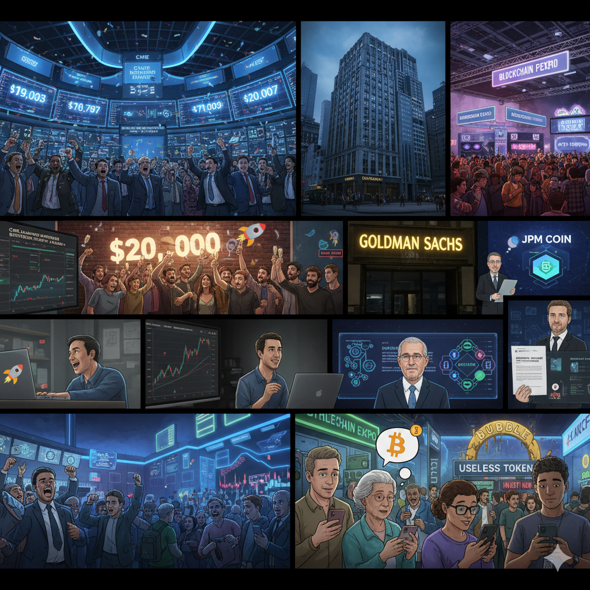

Breaking Waves: Price Euphoria and Speculative Bubble

December 17, 2017, Sunday, 3:07 PM. In the Bitcoin futures trading floor at the Chicago Mercantile Exchange, a historic number appeared on the screen: $19,783. Minutes later, across various spot exchanges, this number was refreshed to $19,891, $20,089, $20,327...
Finally, at 4:28 PM, Coinbase displayed a price that broke through the psychological barrier: $20,007.
The trading floor erupted in deafening cheers. At Bitcoin meetups around the world, people raised champagne to celebrate this historic moment. On Reddit's cryptocurrency forums, "TO THE MOON" memes scrolled endlessly.
But behind this euphoria, few realized they were witnessing one of the most spectacular speculative bubbles in human financial history. From $1,000 at the beginning of the year to $20,000 at year's end, Bitcoin rose 2,000% in 12 months.
Psychological Reconstruction Breaking $1,000
The story of 2017 began with breaking through an important psychological barrier. On January 2nd, Bitcoin price once again stood above $1,000—the first time reaching this level since 2013. For many, this wasn't just a price recovery but the final dispelling of the Mt.Gox collapse shadow.
In a New York investment bank, quantitative trader Michael Chen stared at the price curve on his screen with mixed emotions. Four years earlier, he had bought Bitcoin at the $1,100 peak, then watched helplessly as it fell to $200. During those dark days, he questioned his judgment almost daily.
"I almost sold," he later recalled, "In 2015, my friends all said Bitcoin was finished and advised me to cut losses. But I remembered Amazon's experience after the 2000 internet bubble burst and decided to wait a bit longer."
This patience was richly rewarded. By mid-2017, Chen's investment had multiplied tenfold. But more importantly, the $1,000 breakthrough sent a strong signal to the entire market: Bitcoin was not only not dead but stronger than ever.
Historic Shift in Institutional Perception
The $1,000 breakthrough not only attracted retail investors but more importantly caught institutional investors' attention. For these professional investors managing trillions of dollars in assets, Bitcoin breaking $1,000 meant it was beginning to qualify as a "real asset class."
Goldman Sachs was among the first Wall Street investment banks to publish Bitcoin research reports. In March 2017, Goldman Sachs analysts wrote in a report: "While we still have concerns about Bitcoin's long-term sustainability, its price resilience and continuous technical improvements suggest this asset class deserves serious consideration from institutional investors."
JPMorgan Chase was more cautious. CEO Jamie Dimon called Bitcoin a "fraud" at a banking conference, but simultaneously, JPMorgan's technology team was internally researching blockchain technology and even developing their own digital currency, JPM Coin.
More symbolically significant was the launch of CME Bitcoin futures. On December 18, 2017, CME officially launched Bitcoin futures trading, marking traditional financial markets' first formal embrace of Bitcoin.
"This is an important milestone in Bitcoin's development," CME CEO Terry Duffy said at the launch ceremony, "We're integrating an emerging digital asset into traditional financial infrastructure."
ICO Boom and Blockchain Euphoria
The 2017 bull market belonged not only to Bitcoin but to the entire cryptocurrency and blockchain ecosystem. The most representative phenomenon was the explosive growth of ICOs (Initial Coin Offerings).
The ICO concept was simple: startups issue their own tokens, investors buy these tokens with Bitcoin or Ethereum, hoping token prices rise after project success. This financing model bypassed traditional venture capital and banking systems.
But ICO reality was far more complex than the concept. During 2017's peak, almost daily new ICO projects launched, from blockchain infrastructure to decentralized applications, from digital identity to supply chain management—seemingly any concept could combine with blockchain.
The most extreme example was a project called "Useless Ethereum Token." The founder explicitly stated in the whitepaper that this token was completely useless, purely to satirize the ICO boom. Even so, the project still raised hundreds of thousands of dollars.
"This proves the market's madness level," commented an anonymous blockchain developer, "People had lost rationality; as long as project names contained 'blockchain' or 'decentralized,' someone would invest."
ICO prosperity also drove Ethereum's price surge. Since most ICO projects accepted Ethereum as payment, demand for Ethereum skyrocketed. Ethereum price rose from $8 at year's beginning to $1,400 at year's end, an increase exceeding 17,000%.
Full Eruption of Retail FOMO
As Bitcoin prices continued rising and media coverage increased, FOMO (Fear of Missing Out) emotions began spreading among retail investors. The speed and scope of this emotion's transmission were unprecedented.
Social media became the main channel for FOMO emotion transmission. On Facebook, friends shared screenshots of their investment gains. In WeChat groups, colleagues discussed which exchanges were easiest to register with. On Twitter, Bitcoin price predictions soared from $50,000 to $100,000, $500,000, even $1,000,000.
"My mom started asking me how to buy Bitcoin," wrote one Reddit user, "When your mom starts caring about Bitcoin, you know how far this surge has gone."
A typical manifestation of this FOMO emotion was the explosive growth in investor education demand. New user registrations at exchanges like Coinbase surged so much that servers frequently crashed from overload. Various Bitcoin tutorial videos received millions of views on YouTube.
More interestingly, demographics traditionally uninterested in technology also began flooding into the Bitcoin market. A software engineer working in Silicon Valley told reporters: "My barber, coffee shop clerk, even Uber drivers are discussing Bitcoin with me. This was unimaginable before."
Celebrity Effects and Media Amplification
The 2017 Bitcoin boom was inseparable from celebrity and media amplification. From Hollywood stars to NBA players, from tech entrepreneurs to hedge fund managers, seemingly every influential person commented on Bitcoin.
One of the most influential supporters was John McAfee, the antivirus software pioneer and cryptocurrency enthusiast. He predicted on Twitter that Bitcoin price would reach $1,000,000 by 2020, and if the prediction failed, he would perform an extreme act on national television. This prediction, though absurd, vividly embodied the market's crazy atmosphere at the time.
Traditional media's attitude toward Bitcoin also changed dramatically. The Wall Street Journal, New York Times, CNN, and other mainstream media began regularly reporting Bitcoin prices, with many establishing dedicated cryptocurrency sections.
This media attention created a self-reinforcing cycle: price increases attracted media attention, media coverage attracted more investors, further driving price increases.
Manifestation of Bubble Signs
By the end of 2017, classic bubble signs began appearing. Most famous was the "taxi driver indicator"—when taxi drivers start giving you investment advice, the bubble is about to burst.
In taxis worldwide, drivers were indeed discussing Bitcoin investments with passengers. In New York, a taxi driver told passengers he used credit card cash advances to buy Bitcoin. In London, drivers exchanged registration strategies for different exchanges over radio.
Another typical sign was irrational investment behavior. People began mortgaging homes, emptying savings accounts, even borrowing from loan sharks to buy Bitcoin. A Korean housewife said in an interview: "I sold our family's gold jewelry and invested my children's education fund in Bitcoin. I believe this is an opportunity to change our family's fate."
More absurd was that companies with no blockchain connection saw massive stock price increases merely by adding "blockchain" to their names. Long Island Iced Tea Company's stock price rose 300% in one day after changing its name to Long Blockchain.
2018: The Bubble Bursts
History proved those rational warnings were correct. Starting in January 2018, Bitcoin price began a brutal decline. From the $20,000 peak, prices fell through $10,000, $5,000, finally touching a low of $3,200 at the end of 2018.
The speed and magnitude of this decline were shocking. On some days, Bitcoin price fell over 20% in 24 hours. Investors who bought at the peak watched helplessly as their investments shrank by over 80%.
The Korean housewife wept during a follow-up interview: "I lost everything. The bank repossessed our house, my children's education fund is gone. I don't know how to face my family."
Exchanges were crowded with investors trying to stop losses, but liquidity shortages made their trades difficult. Some small exchanges even experienced technical problems or shut down entirely, preventing users from withdrawing funds.
The ICO market collapse was even more brutal. Statistics showed that over 90% of ICO projects issued in 2017 were trading below issue price by the end of 2018. Many projects completely disappeared, with investors losing everything.
Rational Return and Infrastructure Building
But the bubble's burst also brought positive impacts: it cleansed massive speculative projects and fraudulent schemes, making room for truly valuable innovation.
During 2017's boom, many projects existed solely for fundraising, lacking real technical innovation or business value. After the bubble burst, these projects quickly disappeared, while those truly focused on technical development and practical applications received more attention.
Bitcoin's infrastructure construction also accelerated during the bear market. Lightning Network officially launched in 2018, providing a viable solution to Bitcoin's scaling problem. Various enterprise-level custody, clearing, and compliance services were also established during this period.
"Bear markets are builders' paradise," Coinbase CEO Brian Armstrong said in a 2018 speech, "When speculators leave, those truly committed to building future financial infrastructure can work quietly."
The Deep Meaning Behind the Euphoria
Although 2017's price euphoria ultimately ended in bubble collapse, this experience had profound significance for Bitcoin and the entire cryptocurrency industry's development.
First, this euphoria completed Bitcoin's transformation from niche technology to mass awareness. Before 2017, Bitcoin was mainly the domain of programmers and libertarians. After a year of media bombardment, billions of people worldwide had heard of Bitcoin.
Second, this experience attracted massive talent and capital into the blockchain industry. Many excellent engineers, entrepreneurs, and investors entered this field during this period, laying the foundation for subsequent technical development and business innovation.
Third, regulatory frameworks began establishing. Although regulatory tightening dampened market sentiment in the short term, it also created conditions for the industry's long-term healthy development.
Most importantly, this bubble established Bitcoin's price discovery mechanism. Although the $20,000 peak seemed unsustainable at the time, it provided the market with a reference point.
History's Spiral Ascent
When we look back at 2017's price euphoria today, it appears both crazy and necessary. Crazy in the extreme degree of speculation and widespread irrational behavior; necessary in that it completed an indispensable link in Bitcoin's development journey.
Every technological revolution experiences similar cycles: from early adopters' rational assessment, to media attention triggering public frenzy, to bubble collapse and rational return, finally to true popularization of technology applications. The internet experienced this cycle, mobile phones experienced this cycle, and Bitcoin was no exception.
The 2017 bubble, while causing losses for many individual investors, also injected enormous energy into the entire industry's development. Without this euphoria, there would be no subsequent infrastructure construction; without this awareness popularization, there would be no subsequent institutional investor entry.
In history's long river, 2017 might be remembered as the crucial turning point when Bitcoin moved from experiment to reality. Those investors who bought at the $20,000 peak and held until today ultimately proved their long-term vision. Those who lost everything in the bubble, while paying a heavy price, were also witnesses and participants in this technological revolution.
When the screen at Chicago Mercantile Exchange first displayed the $20,000 figure, no one knew whether this was the beginning or the end. Now we know the answer: this was both the end of one era and the beginning of another.
The 2017 Bitcoin price euphoria, though ending in bubble collapse, completed the transformation from niche to mass awareness, laying the foundation for subsequent institutionalization and mainstreaming. The historic high of $20,000 remains an important milestone in cryptocurrency history, with the cheers from that Sunday afternoon in the CME trading floor forever echoing in Bitcoin history.